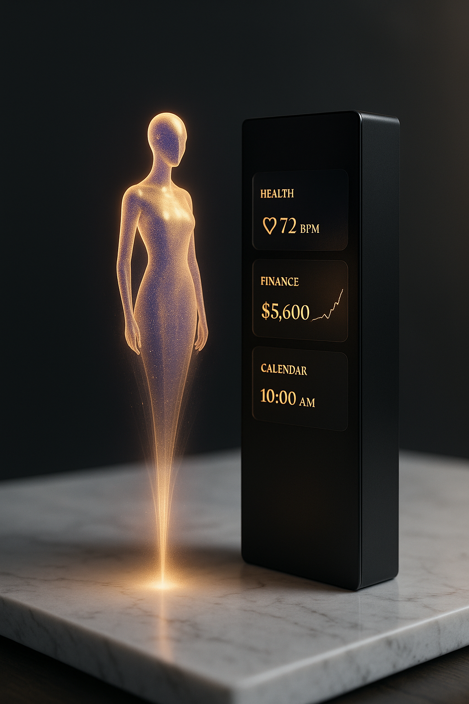

The 30 core architectures that form the Health Nation OS.
Each blueprint represents a fundamental structural layer — cognitive, clinical, operational, infrastructural, or crisis-oriented.
Together, they define how a modern health nation thinks, adapts, and evolves.
Blueprint 11
National Health Digital Twin

Blueprint 12
AI-Driven Population Risk Models
Blueprint 13
Unified Emergency Response Layer
Blueprint 14
Zero-Friction Referral Network
Blueprint 15
Quantum-Safe Healthcare Security
Blueprint 16
National AI Ethics Layer
Blueprint 17
Smart Preventive Care Mesh
Blueprint 18
Autonomous Health Monitoring
Blueprint 19
AI-Integrated Home Care Framework
Blueprint 20
National Health Data Command Center
Advanced Blueprint Layer (21–30)
Blueprint 21
Health Equity Intelligence Layer
Blueprint 22
Unified Social Determinants Engine
Blueprint 23
National Clinical Governance AI
Blueprint 24
Interoperability Exchange Layer
Blueprint 25
National Care Navigation System
Blueprint 26
AI-Driven Workforce Optimization
Blueprint 27
Predictive National Capacity System
Blueprint 28
Healthcare Cyber-Resilience OS
Blueprint 29
National Trust & Compliance Grid
Blueprint 30
Health Nation OS – Meta Architecture
Purpose of the Blueprint Library
These thirty foundational architectures collectively define the cognitive, operational,
infrastructural, trust, and crisis-response layers of the Health Nation OS. Each blueprint
is a modular component capable of being deployed independently or as part of a unified
national transformation program.
Request Full Blueprint Access
Organizations, governments, or institutions seeking the complete architectural documentation,
implementation playbooks, or strategic deployment pathways may submit a formal request.